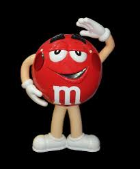

<!DOCTYPE html>
<html lang="pl-PL'>
   <meta charset="iso-8859-2"
   <meta name="viewport" content="width=device-width,initial-scale=scale=1.0"/>
<head>
<title> moja pierwsza strona www</title>
</head>
<body>
 <div style="background-color:gray;">
   <h1><center>psi- Hubert Pytka</center></h1>
 </div>
 <div style="float:left;width:30%; height:550px;">
 <h3>html</h3>
 <a href="index.html">strona główna</a><br />
 <a href="kolory.html">kolory</a><br />
 <a href="listy.html">listy</a><br />
 <a href="mapa.html">mapa</a><br />
 <a href="nauczyciele.html">nauczyciele</a><br />
 <a href="PYTKA_lista.html">sprawdzian_lista</a><br />
 <a href="tabela.html">tabela</a><br />
 <a href="zdiecia.html">zdiecia</a><br />
 <a href="formularz.html">formularz</a><br />
 <a href="identyfikator.html">identyfikator</a><br />
<a href="formularznaocene1.html">formularz na ocene</a><br />
<a href="canvas.html">canvas</a><br />
<a href="wlasciowosci_css.html">wlasciowosci_css</a><br />
<a href="multimedia.html">multimedia</a><br />
<h3>dokument</h3>
<a href="doc/lista2c.docx" target="new">lista grupy II w 2c</a></br>
<h3>linki<h3>
<a href="http://www.google.com"></a><br/>
<a href="http://www.google.com"></a><br/>
<h3>CSS<h3>

 </div>
 <div style="float:right; width:70%;">
 <h3> tresc</h3>
 </div>
 Czekolada pitna - ziarna kakaowca są poddawane fermentacji, suszone, a następnie oczyszczane i prażone. 
 Następnie miażdży się ich skorupki i odsiewa je oraz usuwa zarodki. 
 Z pokruszonych ziaren wydobywa się tłuszcz za pomocą wyciskania, wyżymania lub rozpuszczalnika. 
 Pozostaje sucha substancja, tzw. makuchy. Zostają one rozdrobnione i 
 wysuszone w temperaturze 20 stopni 
 Celcjusza. align leftNastępnie przerabia się je na proszek i przesiewa. Otrzymany ciemny, 
 aromatyczny proszek mieszany jest z cukrem i otrzymuje się czekoladę w proszku.</br>
 
 Czekolada twarda - pokruszoną śrutę kakaową miele się w wysokiej temperaturze. 
 Powstaje masa zwana likierem czekoladowym. Miesza się ją i rozgniata, aż powstanie miałka i 
 tłusta substancja, puszysta, o aksamitnej gładkości. Poddawana jest ona konszowaniu - 
 mieszaniu i rozcieraniu na sucho. 
 Dzięki temu staje się bardziej plastyczna, zmniejsza się jej wilgotność i znikają resztki kwasowości.
 od koniec procesu konszowania dodaje się masło kakaowe i ewentualnie lecytynę. 
 Cały czas masa jest łagodnie podgrzewana do odpowiedniej temperatury (80-85 stopni dla czekolady gorzkiej, 
 55-60 stopni dla czekolady mlecznej). Następnie czekoladę się powoli schładza,
 aby tłuszcz kakaowy jednolicie się skrystalizował. Odpowiednio schłodzona (ale płynna) masa jest wlewana do form.
 W tunelu chłodniczym, w temperaturze około 6-7 stopni czekolada stygnie i 
 krzepnie, kurcząc się w formach. Ostatnim etapem produkcji jest wybicie tabliczek z form i zapakowanie.</br>
  Czekolada pitna - ziarna kakaowca są poddawane fermentacji, suszone, a następnie
 oczyszczane i prażone. Następnie miażdży się ich skorupki i odsiewa je oraz usuwa zarodki. Z pokruszonych 
 ziaren wydobywa się tłuszcz za pomocą wyciskania, wyżymania lub rozpuszczalnika. Pozostaje sucha substancja
 , tzw. makuchy. Zostają one rozdrobnione i wysuszone w temperaturze 20 stopni Celcjusza. Następnie 
 przerabia się je na proszek i przesiewa. Otrzymany ciemny, 
 aromatyczny proszek mieszany jest z cukrem i otrzymuje się czekoladę w proszku.</br>
 Czekolada twarda - pokruszoną śrutę kakaową miele się w wysokiej temperaturze.
 Powstaje masa zwana likierem czekoladowym. Miesza się ją i rozgniata, aż powstanie miałka i 
 tłusta substancja, puszysta, o aksamitnej gładkości. Poddawana jest ona konszowaniu - mieszaniu i 
 rozcieraniu na sucho. Dzięki temu staje się bardziej plastyczna, 
 zmniejsza się jej wilgotność i znikają resztki kwasowości. Pod koniec procesu</br>
 konszowania dodaje się masło kakaowe i ewentualnie lecytynę. Cały czas masa jest łagodnie podgrzewana do odpowiedniej temperatury (80-85 stopni dla czekolady gorzkiej, 
 55-60 stopni dla czekolady mlecznej). 
 Następnie czekoladę się powoli schładza, aby tłuszcz kakaowy jednolicie się skrystalizował. Odpowiednio schłodzona (ale płynna) masa jest wlewana do form. W tunelu chłodniczym, 
 w temperaturze około 6-7 stopni czekolada stygnie i krzepnie, 
 kurcząc się w formach. Ostatnim etapem produkcji jest wybicie tabliczek z form i</br>
 
 
 
 <iframe src="https://giphy.com/embed/3o7WTAkv7Ze17SWMOQ" width="480" height="269" style="" frameBorder="0" class="giphy-embed" allowFullScreen></iframe><p><a href="https://giphy.com/gifs/loop-seamless-3o7WTAkv7Ze17SWMOQ"></a></p>
 </br>
 
 <iframe src="https://giphy.com/embed/mhSqarqAI54wo" width="384" height="480" style="" frameBorder="0" class="giphy-embed" allowFullScreen></iframe><p><a href="https://giphy.com/gifs/mobile-wallpaper-motorola-mhSqarqAI54wo"></a></p>
<video src="PSI/html/multi/film.mp4"controls height="500" width="600"></video><br />
<audio src="PSI/html/multi/nuta.mp3"controls height="500" width="600"></audio>
 
 
<div style="background-color:gray; clear:both;"><center>&copy; B.M. october 2024</center></div>
</body>
</html>